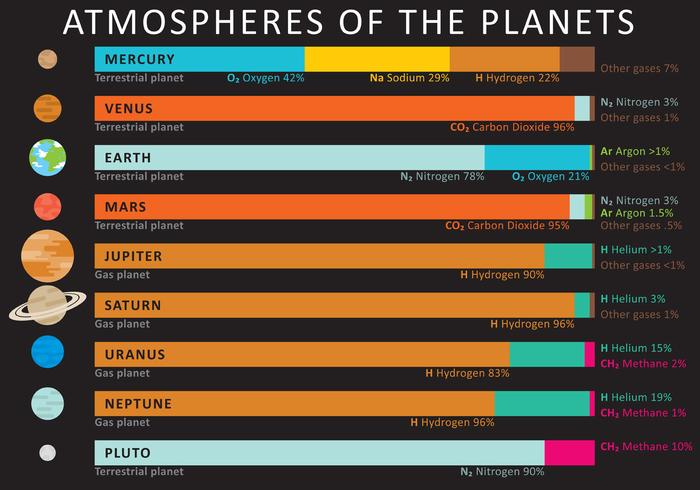
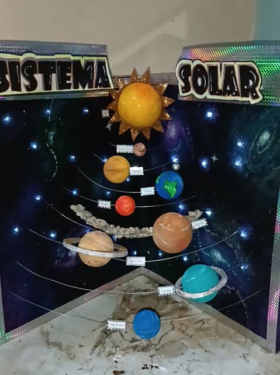

¿Nunca se han preguntado qué tal sería vivir en algún otro planeta de nuestro sistema? Vamos a hablar de qué tal sería su atmósfera para la vida.
Las atmósferas son capas de gases que rodean a los planetas y que cumplen funciones importantes para su funcionamiento. Su composición, temperatura y presión pueden variar entre un planeta y otro, lo que influye en aspectos como el clima, la temperatura y la posibilidad de encontrar condiciones para que se dé la vida.
Además, comprender las atmósferas planetarias es muy importante porque nos permite conocer mejor las condiciones en las que se encuentra cada planeta y entender fenómenos como el clima, los cambios de temperatura y los vientos.
Estudiar las atmósferas también ayuda a explicar por qué algunos planetas pueden presentar condiciones diferentes, mientras que otros poseen ambientes extremos.
La atmósfera está dividida en diferentes capas, cada una con características y funciones distintas. Estudiarlas nos permite comprender mejor fenómenos como el clima, el tiempo atmosférico y la protección de la vida en la Tierra.
Explicar qué son las atmósferas planetarias, su composición y su importancia para comprender las características y condiciones de los diferentes planetas.
Los planetas rocosos, también llamados planetas terrestres, son Mercurio, Venus, la Tierra y Marte. Se encuentran en la zona más cercana al Sol y se caracterizan por tener una superficie sólida compuesta principalmente por rocas y metales. Debido a su composición y tamaño, sus atmósferas son muy diferentes entre sí.
La atmósfera es la capa de gases que rodea un planeta y que se mantiene alrededor de este gracias a la gravedad. En los planetas rocosos, la existencia y densidad de la atmósfera dependen de factores como la masa del planeta, su temperatura, su gravedad y su distancia al Sol.
Mercurio: es el planeta más cercano al Sol y posee una atmósfera extremadamente delgada, conocida como exosfera.
Venus: tiene una atmósfera muy densa, compuesta principalmente por dióxido de carbono (CO₂), con nubes de ácido sulfúrico.
Tierra: posee una atmósfera compuesta principalmente por nitrógeno y oxígeno.
Marte: tiene una atmósfera muy delgada, compuesta principalmente por dióxido de carbono.
Los planetas exteriores se caracterizan por ser mucho más grandes que los planetas rocosos y por poseer atmósferas extensas. En el sistema solar se encuentran Júpiter, Saturno, Urano y Neptuno.
Es importante distinguir entre gigantes gaseosos y gigantes helados: Júpiter y Saturno son gigantes gaseosos, mientras que Urano y Neptuno son clasificados como gigantes helados.
Júpiter y Saturno están formados principalmente por hidrógeno y helio. No poseen una superficie sólida claramente definida como la Tierra; a medida que se desciende por su atmósfera, los gases se vuelven cada vez más densos y la presión aumenta considerablemente.
Urano y Neptuno, aunque también poseen grandes cantidades de hidrógeno y helio en sus capas exteriores, contienen una mayor proporción de materiales como agua, amoníaco y metano. Por esta razón se clasifican como gigantes helados.
Las atmósferas de estos planetas presentan fenómenos meteorológicos muy intensos. Júpiter posee grandes bandas de nubes y tormentas, mientras que Saturno presenta fuertes corrientes atmosféricas. En Urano y Neptuno también existen vientos extremadamente rápidos y sistemas de nubes.
Las siguientes características permiten comparar las atmósferas de los ocho planetas del sistema solar.
| Planeta | Tipo | Característica principal de la atmósfera |
|---|---|---|
| Mercurio | Rocoso | Exosfera extremadamente delgada. |
| Venus | Rocoso | Atmósfera muy densa, compuesta principalmente por dióxido de carbono. |
| Tierra | Rocoso | Atmósfera compuesta principalmente por nitrógeno y oxígeno. |
| Marte | Rocoso | Atmósfera muy delgada, compuesta principalmente por dióxido de carbono. |
| Júpiter | Gigante gaseoso | Atmósfera compuesta principalmente por hidrógeno y helio. |
| Saturno | Gigante gaseoso | Atmósfera compuesta principalmente por hidrógeno y helio. |
| Urano | Gigante helado | Atmósfera formada principalmente por hidrógeno, helio y metano. |
| Neptuno | Gigante helado | Atmósfera formada principalmente por hidrógeno, helio y metano. |

En este espacio interactivo puedes observar los ocho planetas y utilizar el control para abrirlos y observar una representación de sus diferentes capas internas y atmósferas.
